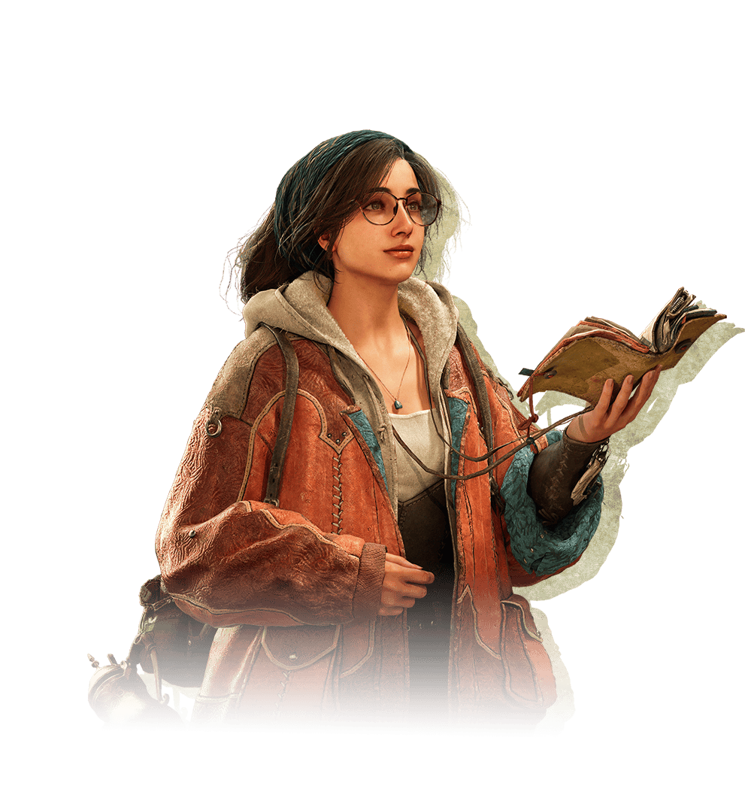
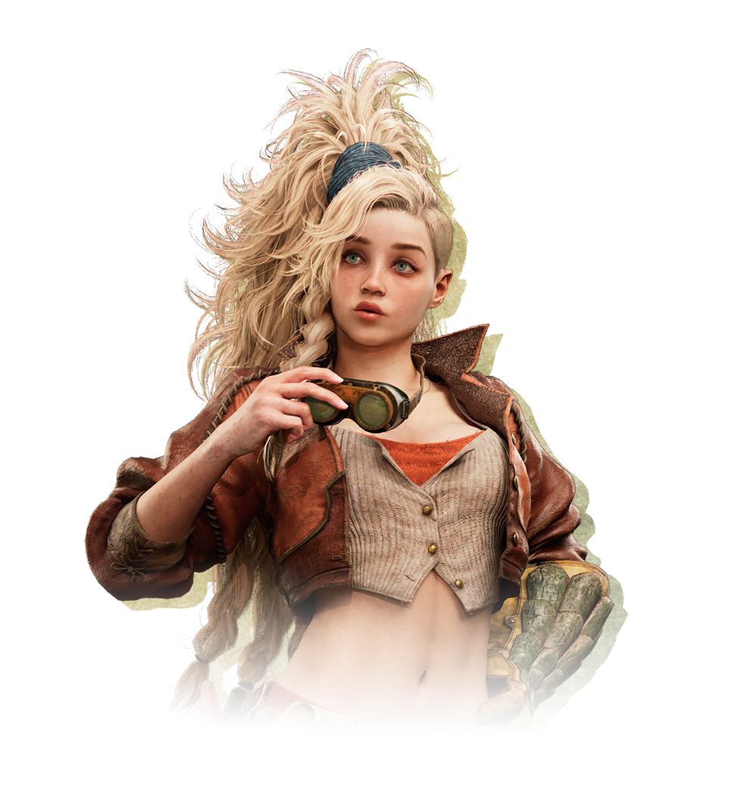

The Hunter's Unit
The Hunter—protagonist of our story—belongs to the Avis Unit. The unit tasked with investigating the monster known as the White Wraith and looking after the mysterious boy, Nata.
 Hunter:
The protagonsit and the character you play as. A hunter assigned to the Forbidden Lands Research Commission, their job is to
help investigate this unexplored region.
Hunter:
The protagonsit and the character you play as. A hunter assigned to the Forbidden Lands Research Commission, their job is to
help investigate this unexplored region. Palico:
A felyne - a cat-like creature fully capable of speaking with people - who is the Hunter's trusted "Palico" partner. They'll provide
invaluable hunting AND moral support.
Palico:
A felyne - a cat-like creature fully capable of speaking with people - who is the Hunter's trusted "Palico" partner. They'll provide
invaluable hunting AND moral support.- Alma: The hunter's "Handler" - one who man ages monster hunter requests, permissions and quests. She'll accompany you out on quests and provide valuable support and knowledge. A specialist in cultural anthropology and an avid archaeologist.
- Gemma: A smithy with the Research Commission. She'll take care of all your weapon and armor crafting needs!
 Nata:
"I was still hoping i imagined the whole thing..."
A mysterious boy that accompanies you on your journey.
Nata:
"I was still hoping i imagined the whole thing..."
A mysterious boy that accompanies you on your journey.